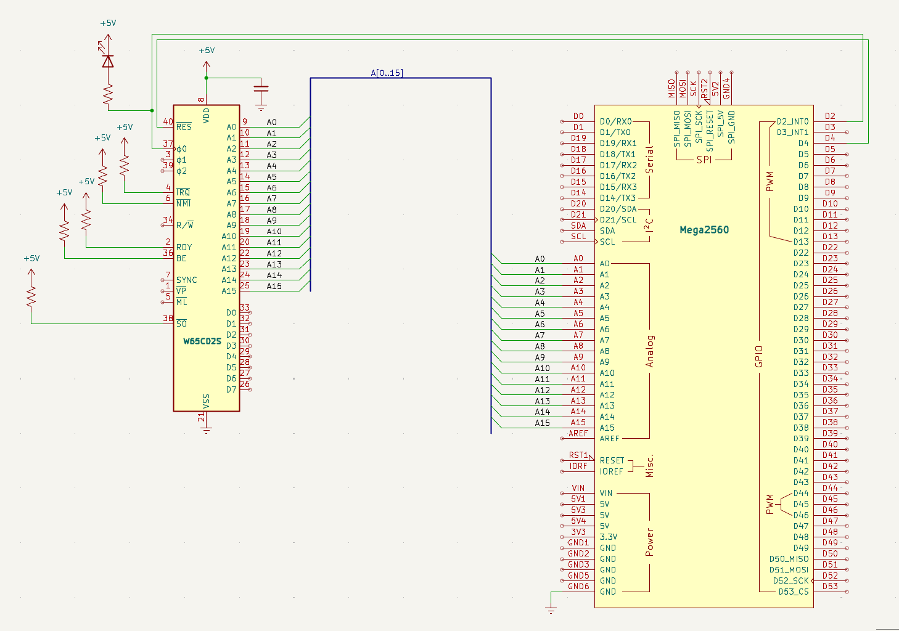

Steg 2 — Adressbuss och reset
Mål
I steg 1 gav vi processorn ström och klocka. Nu ska vi ge den kontroll över adressbussen — 16 ledningar som talar om var i minnet CPU:n vill läsa eller skriva.
Alla 6502-processorer startar på samma sätt: efter reset läser de adress $FFFC och
$FFFD för att få reda på var programmet börjar. Det är inbyggt i kisel — ingen mjukvara, ingen
konfiguration. Genom att koppla in adressbussen och en reset-signal kan vi se detta hända i serieövervakaren.
Vi kopplar också in /RESET (pin 40) till Arduino D4. När vi håller RESB låg i minst 2 klockcykler nollställs CPU:ns interna register. När vi sedan släpper den (HÖG) börjar CPU:n köra från reset-vektorn.
Adressbussen läser vi via Arduinons analoga portar — PORTF (A0–A7) och PORTK (A8–A15). Det ger oss 16 bitar i två registerläsningar.
Nya komponenter
Plocka fram dessa ur komponentlådan. Inga överraskningar — bara det som tillkommer i detta steg.
| Antal | Komponent |
|---|---|
| 17 | Kopplingstrådar (16 adress + 1 RESB) |
Kopplingsschema
Här ser du hela kopplingen på en bild — alla komponenter och ledningar precis som de ska sitta på kopplingsdäcket.

Kopplingar
Alla kopplingar för detta steg — från strömmatning till signaler. Varje pinne, vart den går, och varför.
| Pin | Signal | Kopplas till | Varför |
|---|---|---|---|
| 8 | VDD | +5V | Strömmatning — CPU:ns driftspänning |
| 21 | VSS | GND | Systemjord — sluten krets |
| 37 | PHI2 | Arduino D2 | Klockingång — Arduino skickar fyrkantsvåg |
| 2 | RDY | +5V via 10kΩ | Ready — HÖG = CPU får köra. Utan denna stannar CPU:n |
| 4 | /IRQ | +5V via 10kΩ | Interrupt request — HÖG = inget avbrott |
| 6 | /NMI | +5V via 10kΩ | Non-maskable interrupt — måste vara HÖG |
| 36 | BE | +5V via 10kΩ | Bus Enable — HÖG = bussarna aktiva. Utan denna är CPU:n bortkopplad! |
| 38 | /SO | +5V via 10kΩ | Set Overflow — avaktiverad |
| 40 | /RESET | Arduino D4 | Kontrollerad reset — Arduino håller CPU:n i reset tills vi är redo |
| 9–16 | A0–A7 | Arduino A0–A7 | Låga adressbyte — läses via PORTF |
| 17–20, 22–25 | A8–A15 | Arduino A8–A15 | Höga adressbyte — läses via PORTK |
Arduino-kod
Koden som laddas upp till Arduino Mega. Varje rad är kommenterad så du förstår vad som händer — kopiera, klistra in, ladda upp.
Koden gör tre saker: (1) håller CPU:n i reset i 5 klockcykler, (2) släpper
reset så CPU:n startar, (3) läser och skriver ut adressbussen i varje cykel. Första utskrifterna ska vara
$FFFC och $FFFD — reset-vektorn.
// ==============================================================
// Steg 2 — Adressbuss och reset-sekvens
// ==============================================================
// CPU:ns 16 adresslinjer (A0–A15) kopplas till Arduinons analoga
// portar. Efter kontrollerad reset läser CPU:n alltid från
// $FFFC och $FFFD — reset-vektorn — oavsett vad som finns där.
#include <Arduino.h>
// --- Pindefinitioner ---
#define PHI2 2 // Arduino D2 → CPU pin 37 (klocka)
#define RESB 4 // Arduino D4 → CPU pin 40 (reset, aktiv låg)
#define CLOCK_HZ 500 // Klockfrekvens i Hz
#define CLOCK_DELAY (1000 / (CLOCK_HZ * 2)) // ms per klockfas
// --- pulse() — en komplett klockcykel ---
// PHI2 växlar LÅG→HÖG→LÅG. CPU:n lägger ut nästa adress
// på stigande flank och håller den stabil under hela höga fasen.
void pulse() {
digitalWrite(PHI2, LOW);
delay(CLOCK_DELAY); // Låg fas — CPU:n förbereder nästa adress
digitalWrite(PHI2, HIGH);
delay(CLOCK_DELAY); // Hög fas — adressen är giltig
}
// --- setup() — konfigurera och kör reset-sekvens ---
void setup() {
Serial.begin(115200);
pinMode(PHI2, OUTPUT); // Arduino driver klockan
pinMode(RESB, OUTPUT); // Arduino styr reset
// Portregister — läs 8 bitar åt gången (mycket snabbare än digitalRead!)
DDRK = 0x00; // PORTK (A8–A15) = INPUT, läser CPU A8–A15
DDRF = 0x00; // PORTF (A0–A7) = INPUT, läser CPU A0–A7
Serial.println("Steg 2 — Adressbuss och reset");
// --- Reset-sekvens ---
// W65C02S kräver minst 2 klockcykler med RESB låg. Vi kör 5.
digitalWrite(RESB, LOW); // Håll CPU i reset
for (int i = 0; i < 5; i++) pulse();
digitalWrite(RESB, HIGH); // Släpp reset — CPU:n startar!
// CPU:n läser nu automatiskt reset-vektorn $FFFC/$FFFD.
// Detta är hårdkodat i kislet — ingen mjukvara styr det.
for (int i = 0; i < 10; i++) pulse();
Serial.println("Klar — nu loopar vi:");
}
// --- loop() — läs och skriv ut adressbussen i varje cykel ---
void loop() {
digitalWrite(PHI2, LOW);
delay(CLOCK_DELAY);
// Läs adressbussen medan PHI2 är låg — adressen är redan giltig
uint16_t addr = (PINK << 0) | (PINF << 8);
// PINK = CPU A8–A15 (hög byte)
// PINF = CPU A0–A7 (låg byte)
digitalWrite(PHI2, HIGH);
delay(CLOCK_DELAY);
// Skriv ut till serieövervakaren
Serial.print("R $"); // R = Read (CPU:n läser alltid i steg 2)
Serial.println(addr, HEX); // Adress i hexadecimalt format
}
Testning och felsökning
- Öppna serieövervakaren (115200 baud)
- Första raderna ska vara
FFFC,FFFD, följt av en adress
Om det inte fungerar
- Ser du bara
0eller1? CPU:n är fortfarande i reset eller BE är LÅG. Kontrollera att RESB går HÖG efter reset-sekvensen, och att BE har +5V. - Ser du
FFFCmen inteFFFD? Någon adresslinje är felkopplad. Dubbelkolla A0–A15 en och en. - Skräptecken i serieövervakaren? Baud rate måste vara 115200. Kontrollera
platformio.iniom du använder PlatformIO.